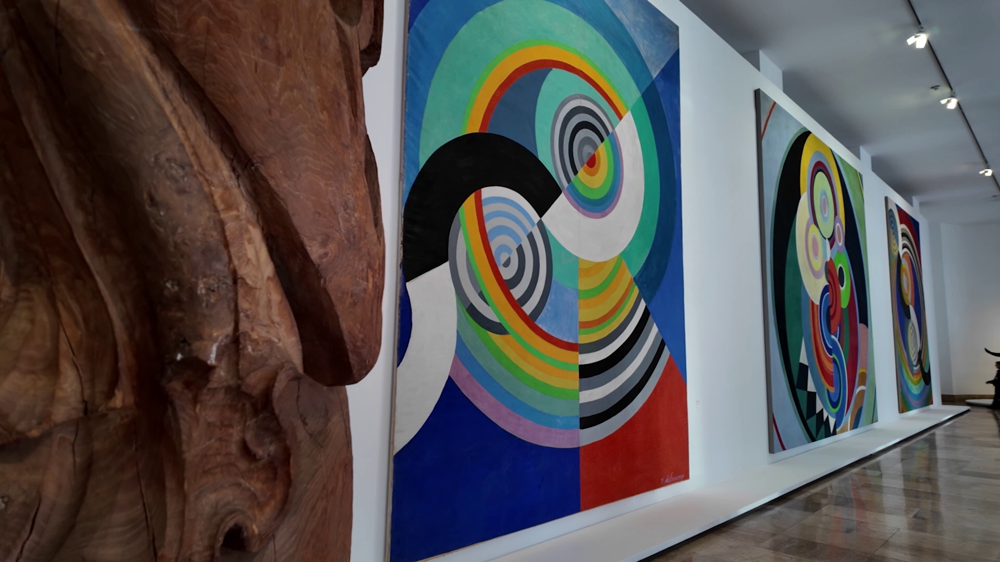
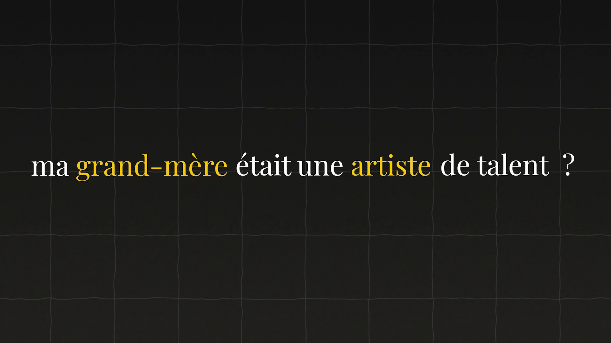

Inestimable
À propos du projet
Inestimable est un documentaire réalisé en 2026 dans

Captation
La captation de ce projet a été répartis sur trois tournage : une interview chez l'habitant, une face caméra du narrateur, et une captation au musée d'Art Moderne de Paris.

Montage
Le montage s'est fait à quatre, sur Premiere Pro. Nous avons réparti le film en quatre parties, chacun a monté la sienne de son côté, puis nous avons harmonisé les styles et les transitions pour que l'ensemble reste cohérent.

Post-production
La post-production a également été réalisée à quatre, sur After Effects. Nous avons effectué des rotoscopies pour passer le personnage en noir et blanc, et créé un effet de « pop » pour la transformation des objets.